Credits
Image credits.
Tarnhale is a fictional practice, so none of these images show real work. Every image and the film on this site is illustrative and AI-generated. None of them is a photograph of a built project or a real place.
| File | What it shows | Model | Label | |
|---|---|---|---|---|
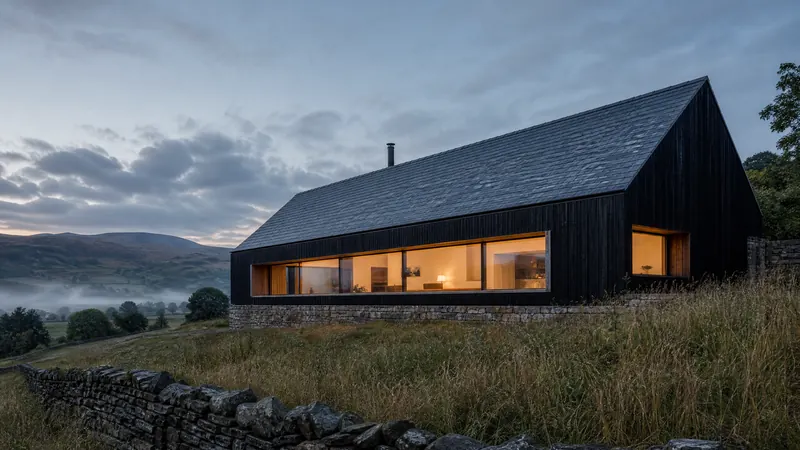 | fh-hero | Fell House at dusk: a long dark timber house with a steep slate roof and one long glowing window, above a misty valley | GPT Image 2 (2K) | Illustrative, AI-generated |
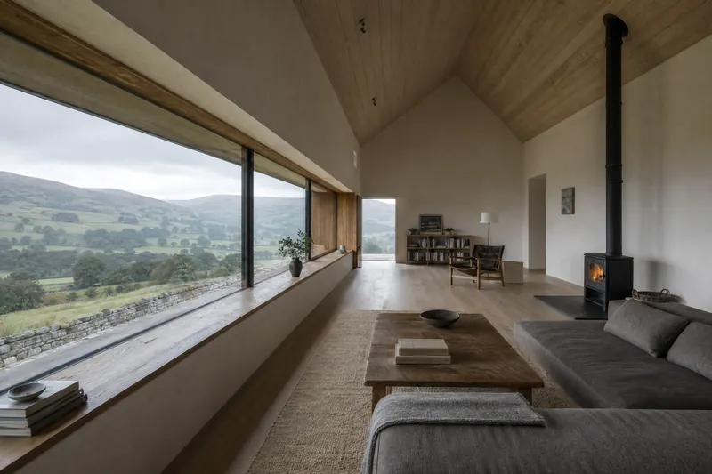 | fh-living | The long living room at Fell House, with a pale timber ceiling, a wood stove and a long window onto the valley | GPT Image 2 (2K) | Illustrative, AI-generated |
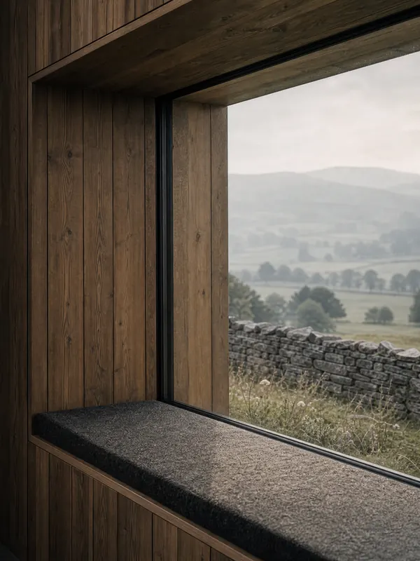 | fh-reveal | A deep timber window seat at Fell House looking out to misty fields and a dry-stone wall | GPT Image 2 (2K) | Illustrative, AI-generated |
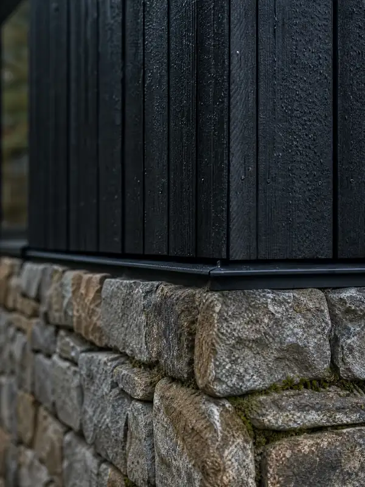 | fh-detail | Close-up of charred black larch boards meeting a dry-stone plinth, with rain on the timber | GPT Image 2 (2K) | Illustrative, AI-generated |
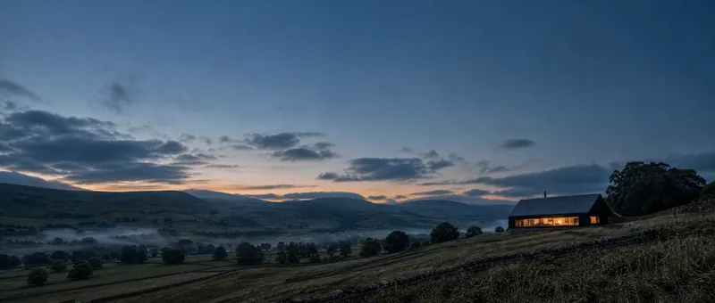 | fh-far | Fell House seen from across the valley at blue hour, a small dark house with a warm window on the hillside | GPT Image 2 (2K) | Illustrative, AI-generated |
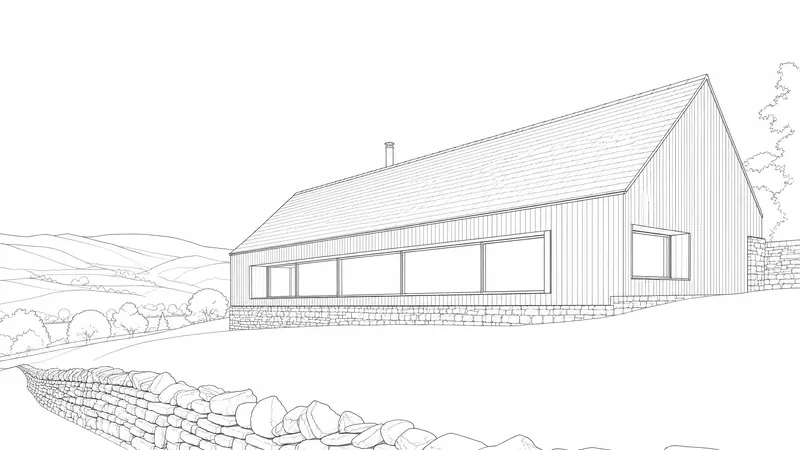 | fh-draw | A black ink line drawing of Fell House, from the same viewpoint as the photo | GPT Image 2 (2K) | Illustrative, AI-generated |
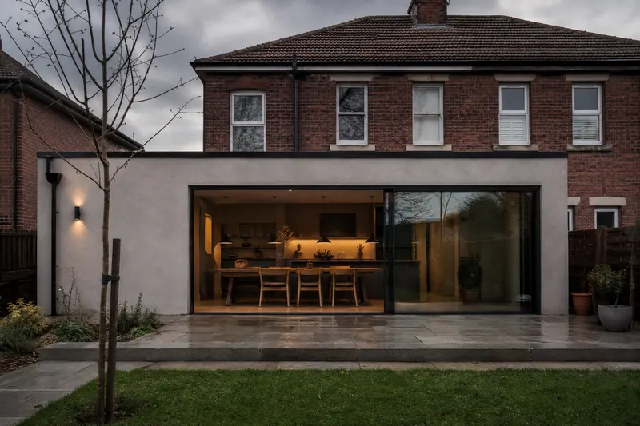 | gr-hero | A pale rendered rear extension with wide dark-framed sliding doors on a brick 1930s semi, seen from the garden | GPT Image 2 (2K) | Illustrative, AI-generated |
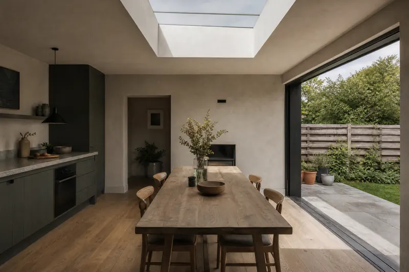 | gr-kitchen | Inside the Garden Room: a long oak table under a wide roof light, a green-grey kitchen and doors open to the garden | GPT Image 2 (2K) | Illustrative, AI-generated |
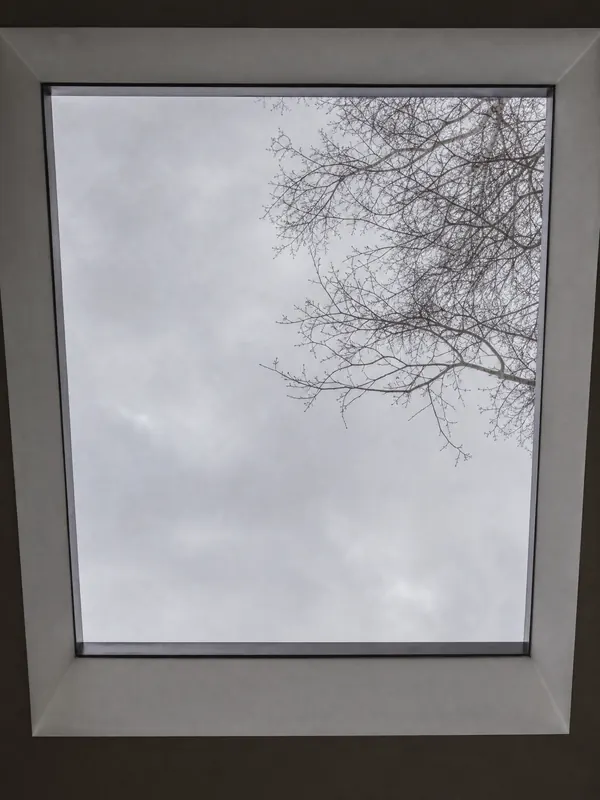 | gr-rooflight | Looking up through a deep frameless roof light to a grey sky and bare branches | GPT Image 2 (2K) | Illustrative, AI-generated |
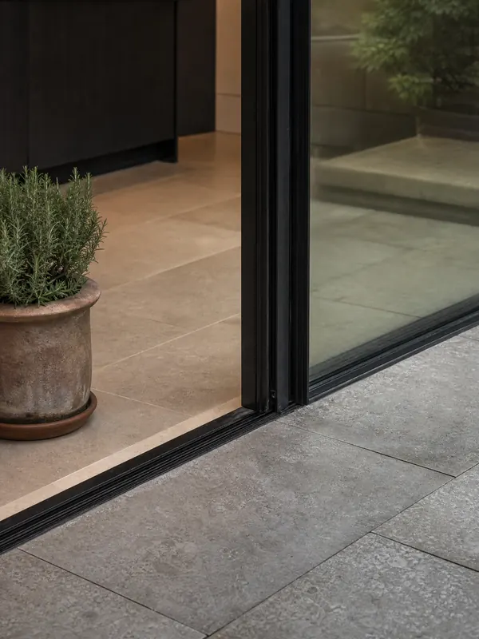 | gr-threshold | A level threshold where a slim sliding door meets a pale stone floor inside and paving outside | GPT Image 2 (2K) | Illustrative, AI-generated |
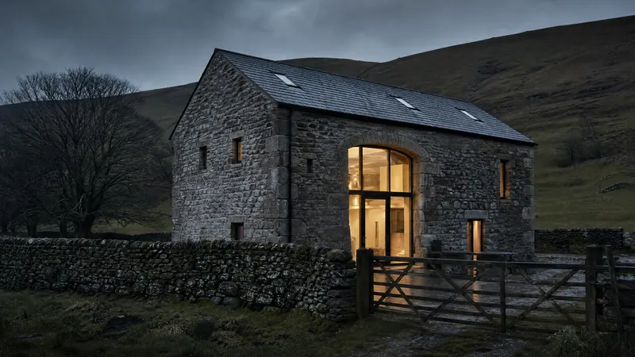 | lb-hero | Lune Barn at dusk: a stone field barn with a slate roof and a tall glazed arch where the cart door was | GPT Image 2 (2K) | Illustrative, AI-generated |
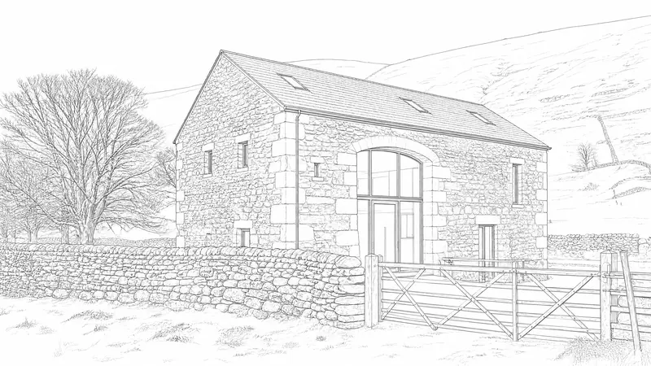 | lb-draw | A black ink line drawing of Lune Barn, from the same viewpoint as the photo | GPT Image 2 (2K) | Illustrative, AI-generated |
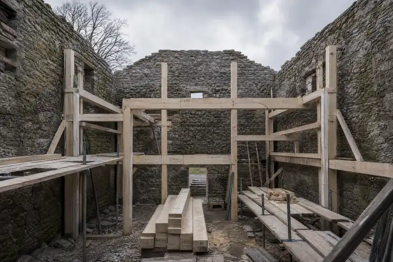 | lb-frame | Lune Barn during the build: a new pale timber frame standing inside the old stone walls | GPT Image 2 (2K) | Illustrative, AI-generated |
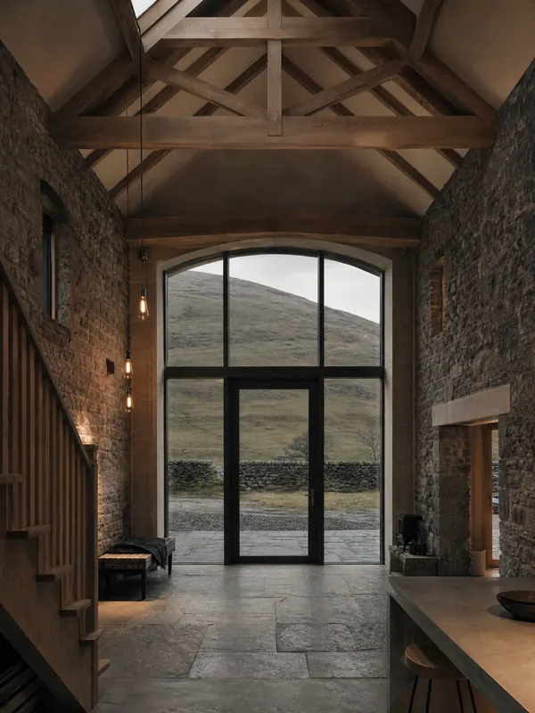 | lb-hall | The double-height glazed hall inside Lune Barn, with old stone walls, oak trusses and a stone floor | GPT Image 2 (2K) | Illustrative, AI-generated |
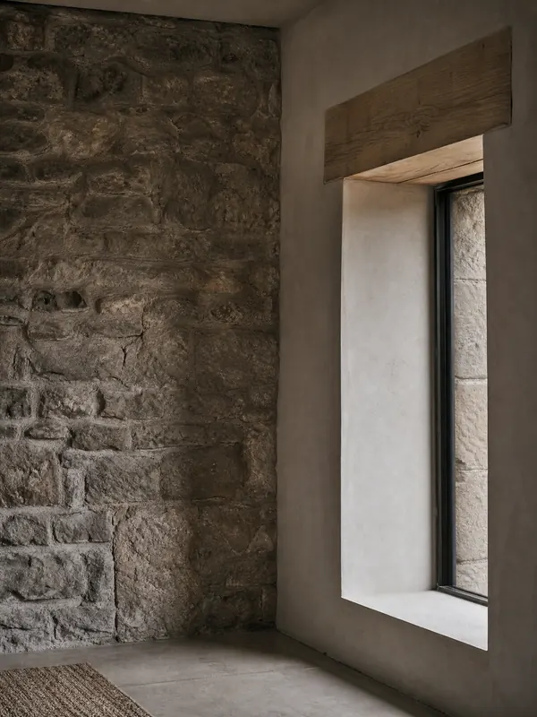 | lb-wall | Old rough limestone meeting smooth new lime plaster and a thick oak lintel over a deep window | GPT Image 2 (2K) | Illustrative, AI-generated |
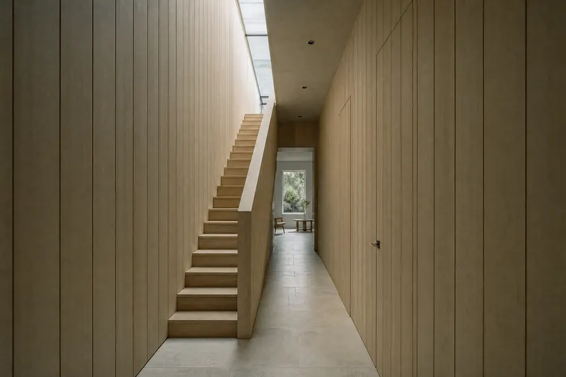 | lh-hero | The Long Hall: a narrow hall lined in pale ash panelling, with a slim stair lit by a long roof light | GPT Image 2 (2K) | Illustrative, AI-generated |
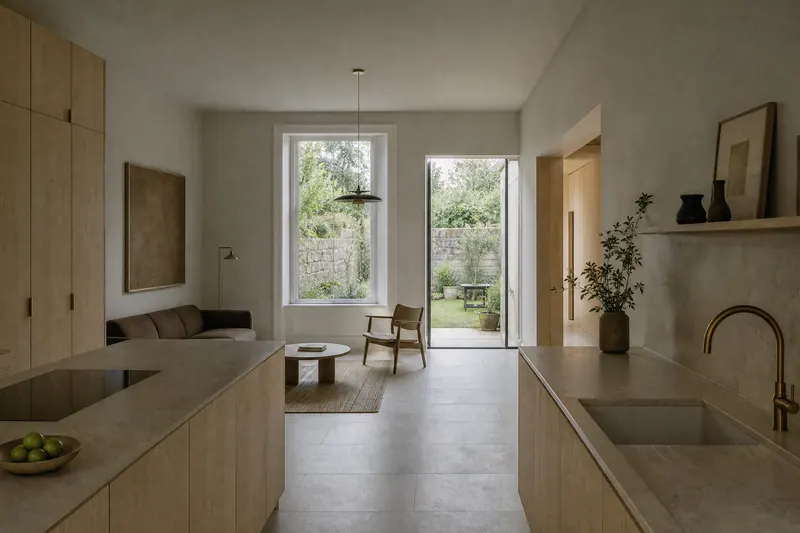 | lh-room | The opened-up back room of a Victorian terrace: a pale ash kitchen, limestone floor and a door to a walled yard | GPT Image 2 (2K) | Illustrative, AI-generated |
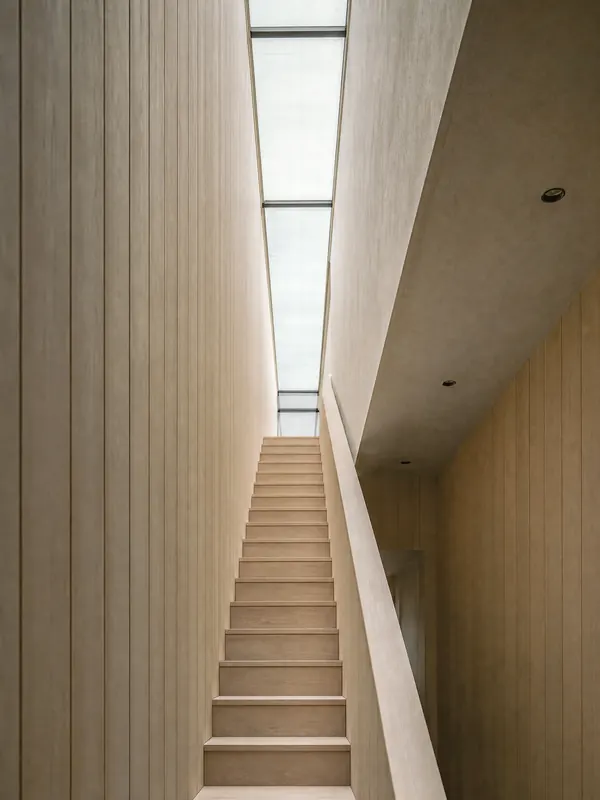 | lh-stair | Looking up a slim straight stair towards a long roof light, with pale timber panelling | GPT Image 2 (2K) | Illustrative, AI-generated |
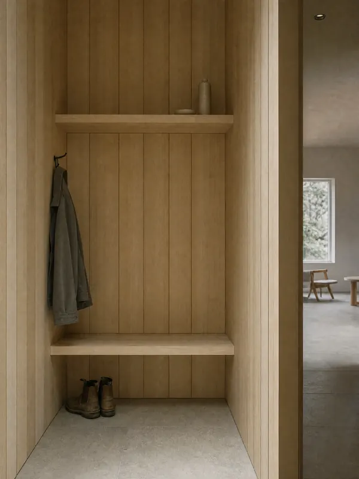 | lh-joinery | A built-in ash bench and shelf in a panelled hall, with a coat on a hook and boots below | GPT Image 2 (2K) | Illustrative, AI-generated |
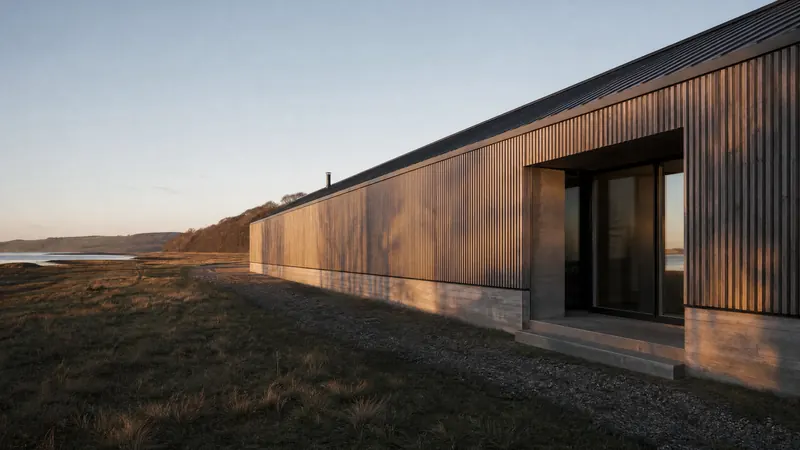 | sh-hero | Slatted House: a long low house screened by silver-grey timber slats, beside a quiet estuary in evening sun | GPT Image 2 (2K) | Illustrative, AI-generated |
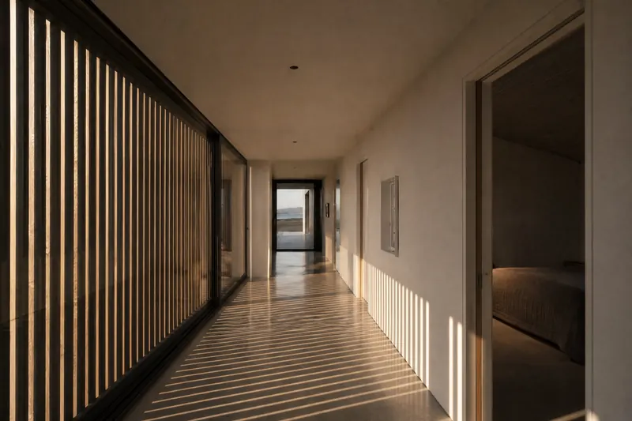 | sh-gallery | The long gallery inside Slatted House, with stripes of evening sun across a polished concrete floor | GPT Image 2 (2K) | Illustrative, AI-generated |
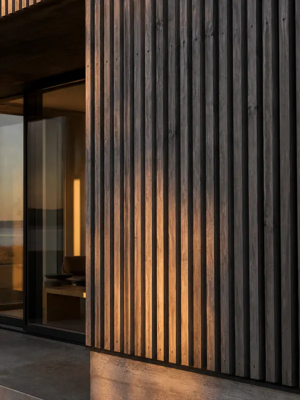 | sh-slats | Close-up of weathered silver-grey larch slats in low evening sun, with glass behind | GPT Image 2 (2K) | Illustrative, AI-generated |
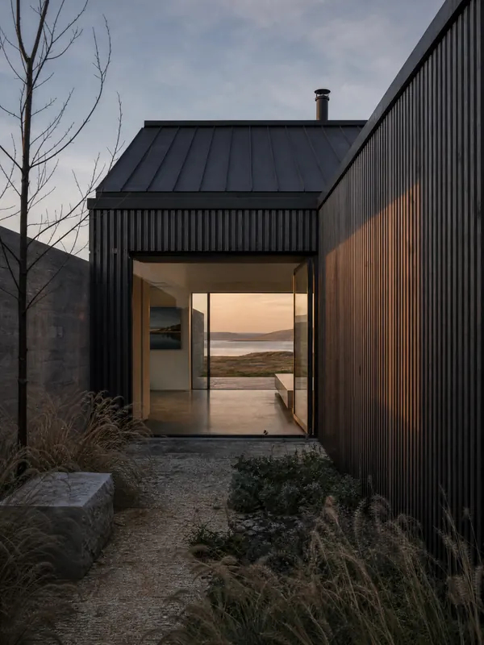 | sh-court | A small courtyard garden with grasses and a stone bench, beside a wide glass door and timber slats | GPT Image 2 (2K) | Illustrative, AI-generated |
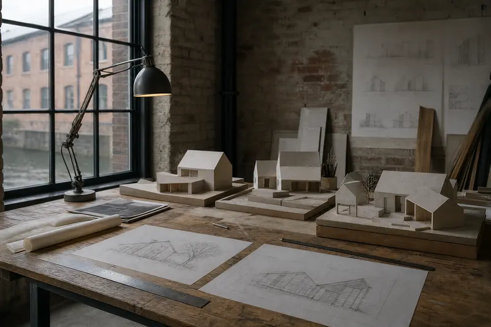 | studio | An architecture studio table with white card house models, tracing paper and pencil drawings by a big window | GPT Image 2 (2K) | Illustrative, AI-generated |
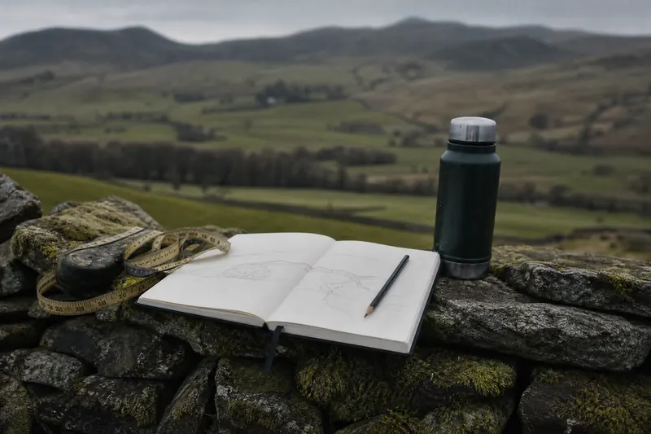 | pr-site | A tape measure, sketchbook, pencil and flask resting on a mossy dry-stone wall above a green valley | GPT Image 2 (2K) | Illustrative, AI-generated |
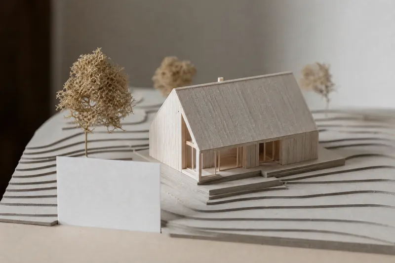 | pr-model | A small card and timber model of a house with a steep roof on a contoured site model | GPT Image 2 (2K) | Illustrative, AI-generated |
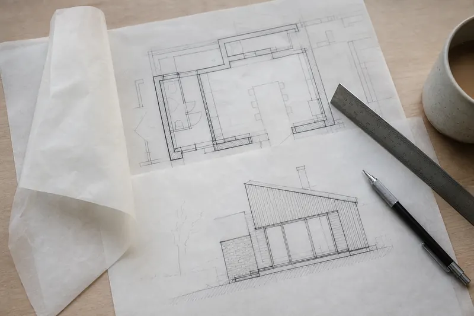 | j-planning | Pencil and ink drawings of a small rear extension on a desk, with tracing paper, a scale rule and a pencil | GPT Image 2 (2K) | Illustrative, AI-generated |
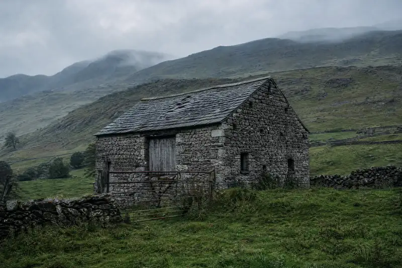 | j-barn | An old unconverted stone barn in a sloping field below misty fells | GPT Image 2 (2K) | Illustrative, AI-generated |
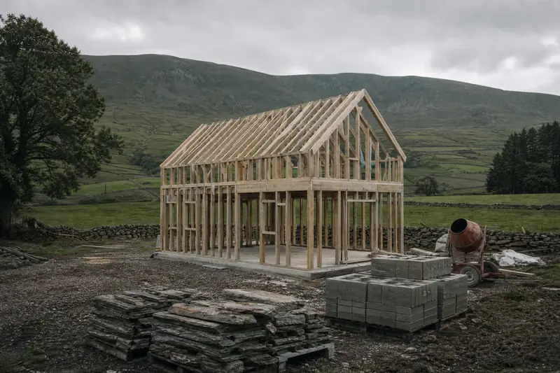 | j-timber | A new timber house frame on a concrete slab in a green valley, next to stacks of blocks and stone | GPT Image 2 (2K) | Illustrative, AI-generated |
hero-loop | The home page film: a slow push-in on Fell House at dusk, made from the Fell House image | Veo 3.1 Fast (1080p, 8 seconds, looped) | Illustrative, AI-generated |
Display type: Clash Display by Indian Type Foundry, from Fontshare, used under the ITF Free Font License. Text type: Archivo and JetBrains Mono, from Google Fonts.